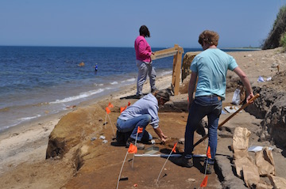

NOAH FELLMAN
GIS
Archaeology
Applications Development
Under development. More soon!
Professional data-driven archaeological investigations using foward thinking technologies and techniques. With extensive experience in the Levant, United Kingdom, and Eastern United States. Discover MPMRC
Geospatial, geotechnical, remote sensing, photogrammetry, geostatistics and much more. Understand ArcGIS
Development of powerful and scalable applications for data collection, analytics, and dissemination. Bring data to life to tell a story or empower an organization towards better decision making. Create Project portfolio